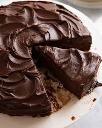

Chocolate 🫠Fudge Cake ğŸ°

Need a guaranteed crowd-pleasing cake that's easy to make? This super-squidgy chocolate fudge cake with smooth icing is an instant baking win
Ingredients
- 150ml sunflower oil,
- 175g self-raising flour
- 2 tbsp cocoa powder
- 1tsp bicarbonate of soda
- 150g caster sugar
- 2 tbsp golden syrup
- 2 large eggs,lightly beaten
- 150ml semi-skimmed milk
For the Icing
- 100g unsalted butter
- 225g icing sugar
- 40g cocoa powder
- 2½ tbsp milk
Preparation
- Heat the oven to 180C/160C. Oil and line the base of two 18cm sandwich tins. Sieve the flour, cocoa powder and bicarbonate of soda into a bowl. Add the caster sugar and mix well..
- Make a well in the centre and add the golden syrup, eggs, sunflower oil and milk. Beat well with an electric whisk until smooth.
- Pour the mixture into the two tins and bake for 25-30 mins until risen and firm to the touch. Remove from oven, leave to cool for 10 mins before turning out onto a cooling rack.
- To make the icing, beat the unsalted butter in a bowl until soft. Gradually sieve and beat in the icing sugar and cocoa powder, then add enough of the milk to make the icing fluffy and spreadable.
- Sandwich the two cakes together with the butter icing and cover the sides and the top of the cake with more icing.
- Enjoy!
Previous recipe
Next recipe
Return to Home Page